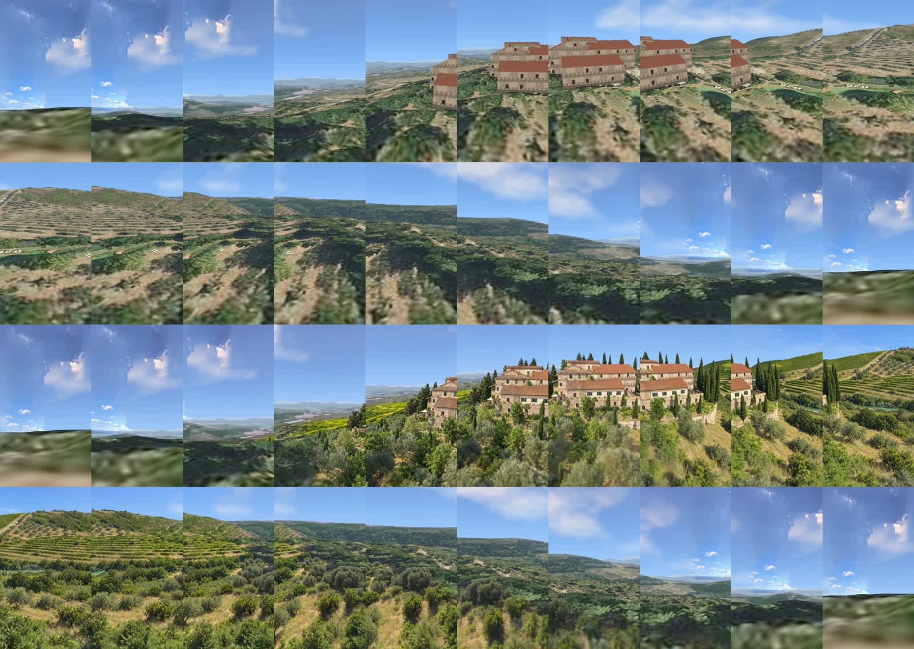

Tuscany drone orbit - the draft
Plnty video-restyler, Seedance 2.5, 480p draft, on our real-geometry guide render. 249 credits spent, balance 4,440. One continuous move, no stitched pieces.
The draft, 10 seconds
- One house the whole way: stone villa, terracotta roofs, cypresses. It does not turn into a different villa like drone v2 did
- The camera follows our path exactly. No stall, no jump (measured frame by frame)
- The first 1.5 s and the last 2.5 s were barely restyled. They still look like the rough computer render, with seams in the sky
- The pond is only a thin teal strip, not the angular pond. A yellow field was invented on the horizon at 1.5 s
Independent QA: PASS with fixes. Clean, realistic window is 2.0 to 7.5 s.
Our guide (left) and the result (right)
Watch the start and the end: the right side stays close to the rough guide there.
Only the good middle, slowed to fill the 10 s
- All realistic: the house, then the vineyards and olives. The pond strip shows here
- The price: no rise from the two of you and no landing on the kiss. It becomes a cut to the drone over the house and a cut back to the kiss
Made locally, zero credits. Slowed to 0.55x with frame interpolation.
Every half second (top: guide, bottom: result)
